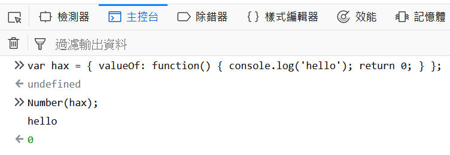
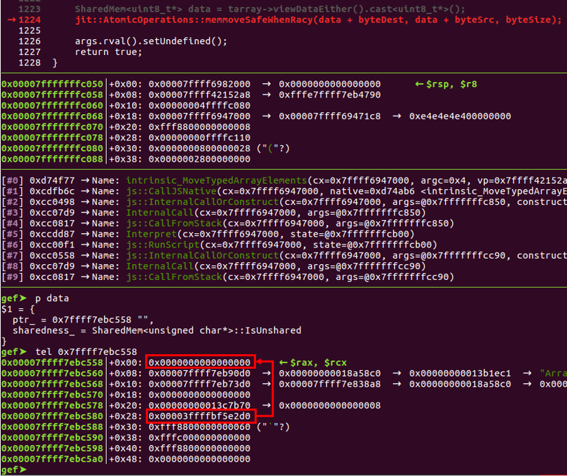
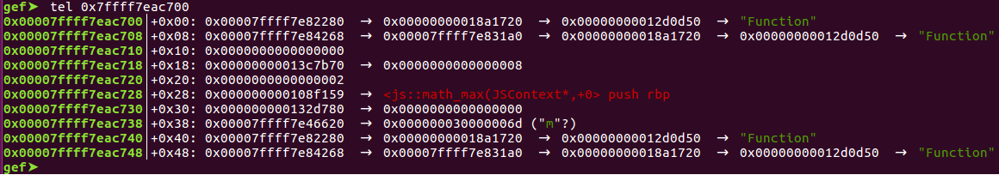

Introduction
So I’ve been playing with the browser exploitation recently, by studying some browser CTF challenges. So far I’ve tried qwn2own, SGX_Browser and feuerfuchs.
qwn2own and SGX_Browser are both great for getting started with the brower exploitation. However, they are not “real world” enough, since both of them are small, simple QT-based browser with custom Javascript extensions. To learn the real world browser exploitation, it’s better to start with feuerfuchs, a Firefox-based browser pwnable challenge created by saelo for the 2016 33C3 CTF.
This write-up is more like a “learning note” stuff. Here I’ll write down my learning process, including how to debug the SpiderMonkey Javascript engine, how the vulnerability works, how to exploit the vulnerability, …. etc.
Pre-knowledge
Before we start, it is recommanded that the reader read this amazing phrack paper ( also authored by saelo ) and have some basic knowledge of the Javascript engine exploitation technique, especially the “Exploiting with valueOf” part, cause we’ll be using that later.
TL;DR:1
2
3
4.... The rules governing the conversion from object types to numbers
(and primitive types in general) are especially interesting.
In particular, if the object has a callable property named "valueOf",
this method will be called and the return value used if it is a primitive value.
For instance, variable hax has the following valueOf property:1
var hax = { valueOf: function() { console.log('hello'); return 0; } };
When the Javscript engine tries to convert hax into an integer, it will first print out the message “hello” to the console, then return 0 as the integer value of hax:

So If we replace console.log("hello") with some malicious code ( e.g. modify an array’s length ), something bad might happen. This concept will be applied to the exploit of the challenge later.
Environment Setting
- Ubuntu Linux 16.04 64 bit
- Firefox 50.1
I’m also using gef to debug the SpiderMonkey Javascript engine.
Building and Debugging the SpiderMonkey Javascript Engine
Since the challenge is to exploit the Javascript engine, we don’t have to debug the entire Firefox browser ( that, my friend, will be a huge pain in the ass ). Instead we’ll just build a JS shell and use it to run the exploit.
According to this link, we can build the JS shell ( with patch ) by using the following commands ( remember to copy the patch file into the directory first ):
1 | cd firefox-50.1.0/ |
After that, we can just use
1 | gef --args build_DBG.OBJ/dist/bin/js pwn.js |
to debug the Javascript engine and learn how the exploit works.
Now we’re all ready, let’s get started !
Analyzing the Vulnerability ( the patch )
Let’s start with the patch first:
1 | ........................ |
We can see that the patch add setter to both offset and length property in the TypedArray class, which allow us to set the offset ( starting point of the data buffer ) and the length of a TypedArray. However the patch has also handled the boundary check for offset and length as well, so we can’t do something like tarray.offset=10000 and use out-of-boundary (OOB) read/write to exploit the service. We’ll have to find another way to exploit the vulnerability.
Analyzing the Exploit
We now start analyzing the exploit code that saelo wrote for this challenge.
The exploit function start at line 233:
1 | function pwn() { |
To understand why the bug is triggered, we’ll have to dig into the source code of copyWithin:
1 | function TypedArrayCopyWithin(target, start, end = undefined) { |
Let’s sum up some important part of this function:
- It first read the
view‘s length and stored the value in thelenvariable. Later it will use this variable to perform some boundary check. - However, at line 15 the
ToInteger(target)will trigger thevalueOffunction in variablehax, makingview‘soffsetbecome88,lengthbecome8. - But the code still use
lenvariable ( which in this case =96) to perform the boundary check, making us able to bypass the checks and eventually callingMoveTypedArrayElements(obj, to | 0, from | 0, count | 0);
Inside the MoveTypedArrayElements will call memmove(dest, src, count), which in this case:
srcwill beview's data pointer + 88 + 40destwill beview's data pointer + 88countwill be8
Let’s see what data will be copied to dest:

Here dest = 0x7ffff7ebc558 and src = 0x7ffff7ebc580, we can see the value 0x3ffffbf5e2d0 will be copied to dest. According to saelo’s comment in the exploit:
1 | // First qword in adjusted view now contains the data pointer (which is stored as a Private, thus needs to be shifted) |
So 0x3ffffbf5e2d0 is actually a data pointer of an ArrayBuffer in its “Private” form. If we left shift the value 1 bit, it will become 0x7ffff7ebc5a0, which is the data pointer of buffers[80].
I’ve traced the source code of SpiderMonkey and couldn’t find the definition of the “Private form”, so I still don’t know why you need to left shift the value 1 bit to get the correct address of the data pointer. I would really appreciate it if someone can tell me where the definition is.
So what view.copyWithin(hax, 32+8, 40+8); does is copy the next ArrayBuffer’s ( buffers[80] ) data pointer into TypedArray view .
Later it stores the data pointer into ptr, and minus 224 to get the addressOfInnerArrayBuffer, which in this case is 0x7ffff7ebc4c0:
1 | gef➤ tel 0x7ffff7ebc4c0 |
We can see that 0x7ffff7ebc4c0 is “the address of buffers[79]“. If we left shift the data pointer 0x3ffffbf5e280, we’ll get 0x7ffff7ebc500 – the data pointer of buffers[79].
Let’s see what does the exploit do next:
1 | // Trigger the bug a second time to write the modified data pointer |
It triggers the bug second time, and modified buffers[80]‘s data pointer into addressOfInnerArrayBuffer. This make us able to modified buffers[79]‘s structure by editing buffers[80], and thus we’ll have an arbitrary read/write primitive !
1 | // |outer| is a byte view onto the corrupted ArrayBuffer which now allows us to arbitrarily modify the ArrayBuffer |inner| |
memory object handles all of the memory read/write operation. For arbitrary read/write, it will first use the outer object to modify pointer in the inner object, then use inner object to read/write data.
Note that addrof function is for leaking an object’s address ( like & in the C language ). Here it uses a very clever method: By exploiting the slots_ member.
The slots_ member is used for storing the info of an object’s properties. Before storing the leakMe property, there’s nothing in inner‘s slots_ member:
1 | gef➤ tel 0x7ffff7ebc4c0 |
After storing the leakMe property, the slots_ member become an address which points to the object’s address:
1 | gef➤ tel 0x7ffff7ebc4c0 |
Here in this case, the exploit leak the address of the Math.max function object, so here 0x7ffff7eac700 points to the Math.max function object:

The rest of the exploit can be summed up as the following steps:
- First leak the function address of
Math.max( which lies inlibxul.so), and calculate the base address oflibxul.so. - Leak
memmoveandsscanf‘s GOT inlibxul.so, and calculatesystem‘s address. - Create a TypedArray
targetand write the command we want to execute into that TypedArray. - Overwrite
memmove‘s GOT inlibxul.sotosystem‘s address. - Call
target.copyWithin(0, 1);. This will eventually callmemmove("our_command"), which will now besystem("our_command"), making us able to achieve RCE.
Summarize
With the ability to set the offset and length property of a TypedArray, we exploit the valueOf and copyWithin functions, so when the Javascript engine tries to convert an object into an integer, it will modify the offset property and achieve OOB access during the memmove operation.
We then leak & calculate the “address of buffers[79]“, and overwrite buffers[80]‘s data pointer with its value, so we can have an arbitrary read/write primitive.
After that we leak the function and GOT’s address, overwrite memmove‘s GOT in libxul.so with system‘s address, then call copyWithin to trigger memmove and execute our own command.
Epilogue
To me browser exploitation is a whole new area. I spent almost a month to study the whole stuff, and I certainly still have a lot more to learn.
For my next browser CTF challenge I would like to try Chakrazy, a challenge based on Microsoft’s Chakra Javascript engine. Hope I’ll be able to solve it and post another write-up :) .
Reference
- feuerfuchs challenge on github
- Attacking JavaScript Engines: A case study of JavaScriptCore and CVE-2016-4622
- SpiderMonkey hacking tips
- JavaScript:New to SpiderMonkey
- SpiderMonkey source code: TypedArray.js
- SpiderMonkey source code: SelfHosting.cpp
- SpiderMonkey source code: Value.h
- TypedArray on MDN
- copyWithin on MDN